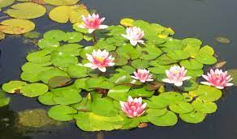
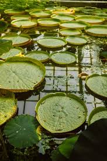
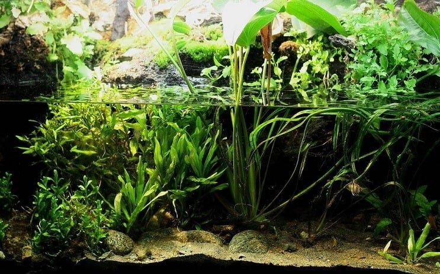

Plantas Acuáticas |
Las plantas acuáticas desempeñan un papel crucial en los ecosistemas acuáticos. Por un lado, proporcionan alimento y refugio para una variedad de organismos acuáticos, incluyendo peces, crustáceos y aves. Además, estas plantas contribuyen a la purificación del agua, ya que absorben nutrientes y contaminantes, ayudando a mantener la calidad del agua. |
|---|

Plantas Acuáticas Flotantes |

Plantas Acuáticas Enraizadas |
|---|